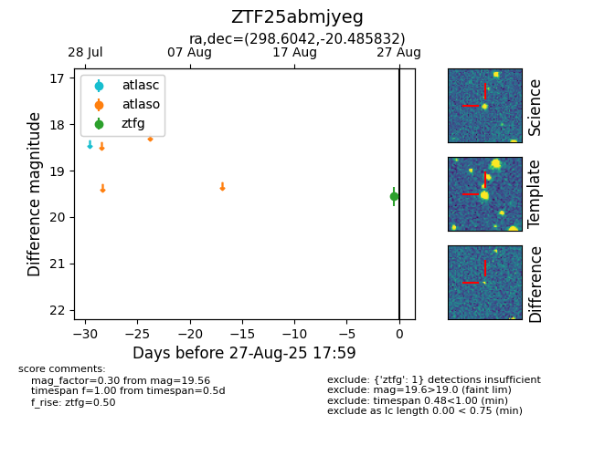

FINK: ZTF25abmjyeg
Lasair: ZTF25abmjyeg
ALeRCE: ZTF25abmjyeg
ZTF25abmjyeg (ztf,fink)
equatorial (ra, dec) = (298.6042,-20.48583)
galactic (l, b) = (20.6936,-22.69408)

last ztfg=19.74
2 ztfg detections